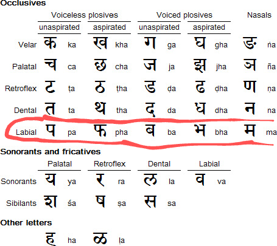
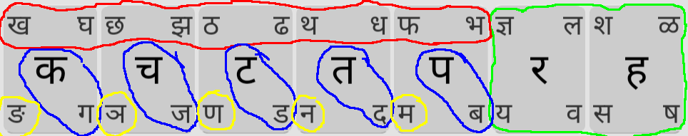
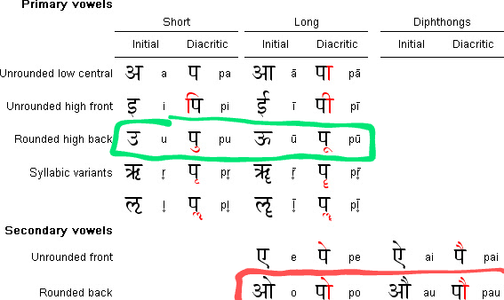
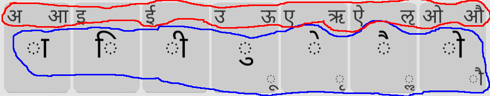
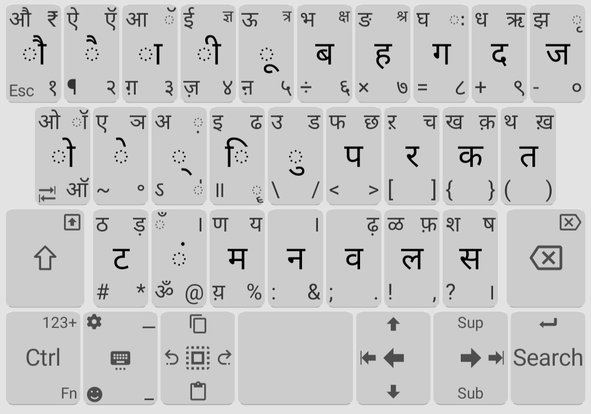

Background
Over a year ago, I started learning Hindi after becoming good friends with this group of Indian boys in college. I wanted to be able to hold a conversation in Hindi, as well as text/type in Hindi.
Hindi uses a different script, namely Devanagari. Although it's possible to write hindi using roman characters, I didn't want this. I wanted to be able to type in the real deal which is Devanagari. This meant learning the Devanagari script as well as some new Devanagari keyboard layout on mobile.
I'm only interested in typing on mobile (not desktop, nor handwriting). It's 2023 - only relevant skills!
Learning About Devanagari
Devanagari a phonetic script, meaning:
- each character represents a specific sound
- each sound has a specific character which represents it
The non-phonetic-ness of English has some interesting consequences: we have spelling bee's. This is because in English, spelling is non-trivial. In phonetic languages like Hindi, spelling is trivial: you just sound out the word and that is also the spelling.
Q: Do you think they have spelling bee's in India?
A:
Actually they do! (but in English).
Another consequence: it's possible to be able to read Devanagari out loud without understanding the meaning.
The Actual Layout
behold! (Swipe to the corner to type that character)
- available on the Google Play Store
- More frequent characters are a tap; less frequent characters are a swipe
- It is possible to type all characters in the Devanagari unicode block
Consonants Row
In Devanagari, the consonants are grouped by tongue/lip movements:
 sourceFor example, the "Labial" group's characters are all lip-movements:
- प = p
- फ = f
- ब = b
- म = m
Let's have a key for each consonant group.
Further organization:
- Circled in red above: aspirated consonants
- Circled in blue above: unaspirated consonants
- Circled in yellow above: nasal consonants
- Circled in green above: the consonants which don't follow the pattern
Here, each circled pair of consonants has the same tongue/lip movement.
Vowels Row
In Devanagari, the vowels are grouped by sound:
 sourceFor example, the "Rounded high back" group's characters are all "u"-sounds.
Q: What is "diphthong"?
A:
When you change your underwear
Let's have a key for each vowel group. The vowel row also somewhat follows the "standard" vowel order:
अ आ इ ई उ ऊ ऋ ए ऐ ओ औ
It's analogous to the "standard" vowel order in English: AEIOU. Note neither of the "standard" vowel orders follows pitch order (sad).
Further organization:
- Circled in red above: initial vowels
- Circled in blue above: diacritic vowels
Here, each circled pair of vowels has the same sound.
Alternative Layouts
Before creating my layout, I asked my Indian bros which layouts they used. They pretty much had 2 answers:
1. GBoard's Hindi layout

2. SwiftKey's Hindi layout

In hindsight, these are both great options. They both have similar organization. Both these keyboards have auto-complete, whereas Unexpected Keyboard (the app which I added my layout to) doesn't have auto-complete.
If you already know Devanagari and simply want to type fast, auto-complete might be the move.
I briefly considered the Inscript layout, the official Devanagari layout for desktop.
(Google Play Store) If you already know this layout from typing on desktop, this might be the move.
Thanks for reading!